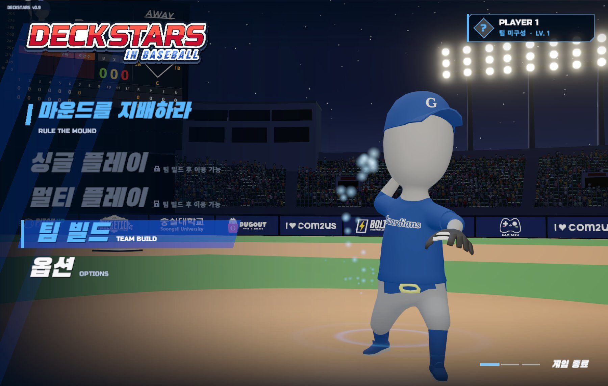
AI로 만들고 검증하는 클라이언트 개발자
투구·타격·수비 물리를 직접 구현하고, 변경 영향만 골라 검사하는 자동 QA 도구까지 갖춘 3D 야구 게임입니다.
투구·타격·수비·주루·판정·중계 연출까지 갖춘 3D 야구 게임입니다. AI(Claude)와 Unity MCP로 개발 속도를 높였고, 그만큼 커진 코드의 품질을 지키기 위해 AI 작업물을 자동으로 검증하는 QA 도구를 에디터 안에 직접 만들었습니다.
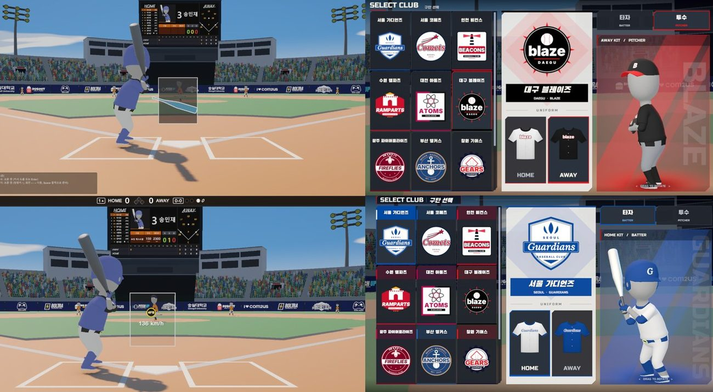
구단 선택 · 유니폼 적용
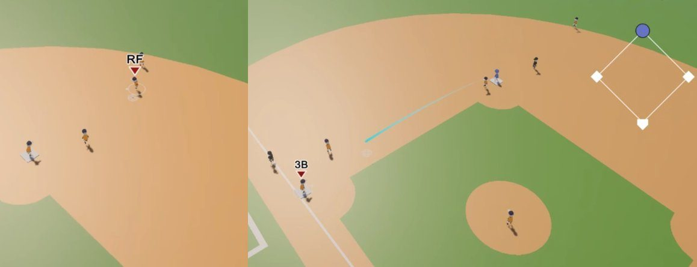
수비 · 주루 진행 화면
| 게임 코드 | 시스템 | 자동 QA 시나리오 | 최종 전체 실행 콘솔 에러 |
|---|---|---|---|
| 36,337줄 · 스크립트 121개 | 투구·타격·수비·주루·심판·카메라·UI·오디오 등 10개 이상 | 6개 (하네스 프로필 5종) | 0 |
AI로 기능을 빠르게 붙이자 코드가 3만 줄을 넘었고, 수정 하나가 어디까지 영향을 주는지 알 수 없게 됐습니다. 문제를 나눠 정의하고 각각 해결했습니다.
| 문제 | 해결 |
|---|---|
| 정적 분석은 런타임에 연결되는 의존성(이벤트 구독, GetComponent·Find)을 놓친다 | 플레이 중 delegate 구독 목록과 필드 참조를 읽어 실제 연결을 기록 |
| 코드가 커서 매번 전부 분석·테스트하면 비용이 크다 | 파일 해시로 결과를 캐싱하고, 바뀐 부분의 영향 범위만 다시 실행 |
| 씬마다 검증 기준이 다르다 (경기 판정 vs 설정 화면 vs 연출) | 실행기는 공통, 환경·시간·관찰·판정만 바꾸는 하네스 프로필 |
| 실패해도 왜 실패했는지 찾기 어렵다 | 통과·실패 타임라인을 맞춰 처음 갈라진 지점과 관련 함수 호출을 자동 추출 |
파란 칸은 AI 담당, 나머지는 도구가 자동 수행하고 사람은 결과를 승인합니다.
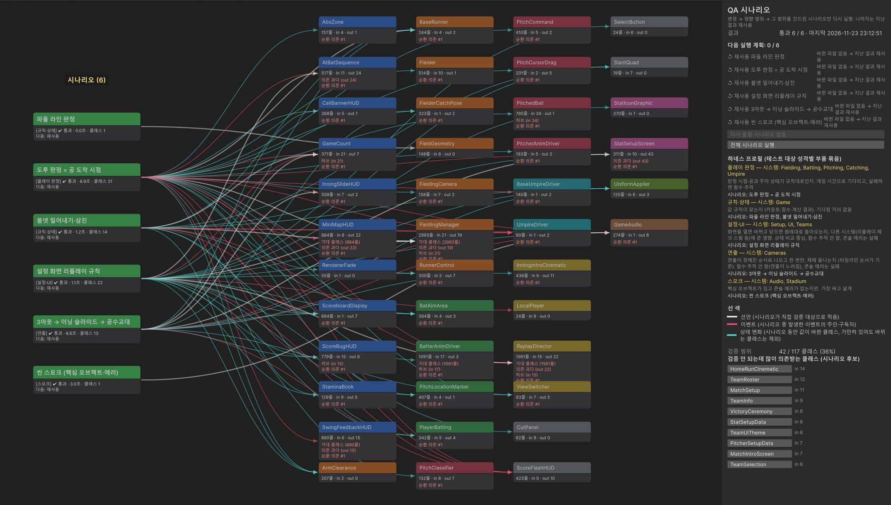
QA 시나리오 보기 — 시나리오 6개가 실제로 건드린 클래스로 연결, 오른쪽에 다음 실행 계획·프로필·검증 범위
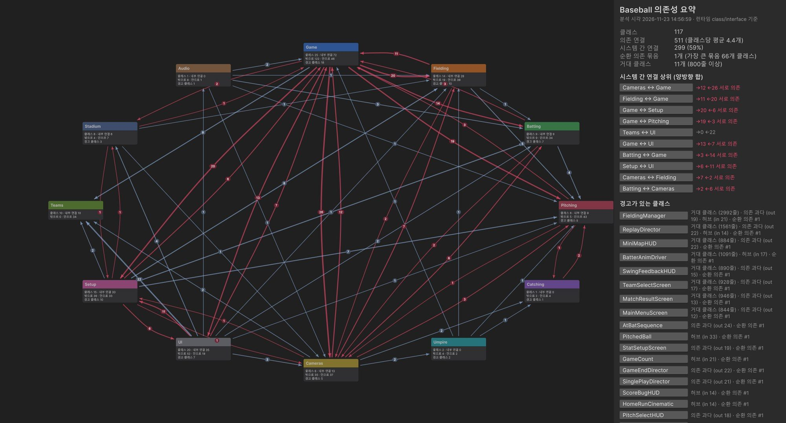
시스템 요약 보기 — 시스템 간 연결 수(빨강 = 서로 의존), 오른쪽에 연결 상위와 경고 클래스
실행기는 공통이고 프로필이 시작 환경·시간 제한·함수 추적·콘솔 에러 처리만 바꿉니다. 시나리오의 클래스가 속한 시스템을 의존성 그래프에서 읽어 자동으로 배정합니다.
| 프로필 | 대상 시스템 | 판정 기준 | 시간 | 함수 추적 | 콘솔 에러 |
|---|---|---|---|---|---|
| 플레이 판정 | 수비·타격·투구·심판 | 판정 시점, 공·주자 상태 | 40s | 실패 시 | 기록 |
| 규칙·상태 | 경기 규칙 | 카운트·점수·계산 값 | 20s | 실패 시 | 기록 |
| 설정·UI | 설정 화면·UI | 열면 바뀌고 닫으면 복구 | 20s | 안 함 | 실패 |
| 연출 | 카메라·컷신 | 순서·한 번만·제때 끝남 | 40s | 안 함 | 실패 |
| 스모크 | 오디오·경기장 | 핵심 오브젝트 + 에러 없음 | 15s | 안 함 | 실패 |
| 시나리오 | 프로필 | 검사 | 결과 |
|---|---|---|---|
| 도루 판정 = 공 도착 시점 | 플레이 판정 | 2루 판정 순간 공이 야수 손에 있는지 | 4/4 |
| 파울 라인 판정 | 규칙·상태 | 실제 필드 축 기준 점 10개 페어/파울 | 11/11 |
| 볼넷 밀어내기·삼진 | 규칙·상태 | 만루 볼넷 1점, 루킹 삼진 1아웃 | 10/10 |
| 설정 화면 리플레이 규칙 | 설정·UI | 연습 중 리플레이·ABS 차단, 닫으면 복구 | 11/11 |
| 3아웃 → 이닝 슬라이드 → 공수교대 | 연출 | 화면을 가린 뒤 교대 (0.93s ≥ 0.92s) | 8/8 |
| 씬 스모크 | 스모크 | 핵심 오브젝트 + 3초간 에러 없음 | 6/6 |
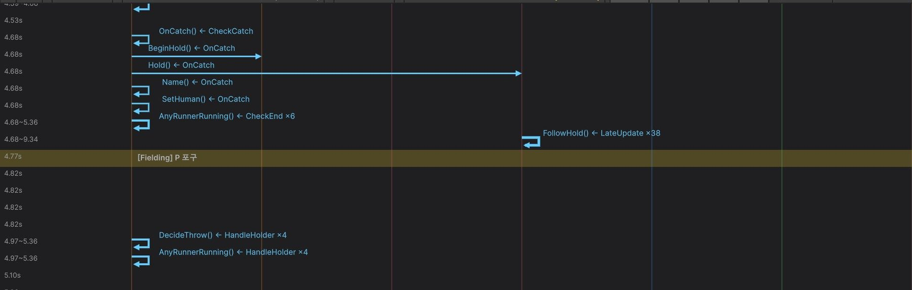
시퀀스 다이어그램 (함수 추적·실패 기록) — 세로 = 시간, 파란 화살표 = 함수 호출, 노란 띠 = 통과 실행과 갈라진 지점 "P 포구"
| action | AI가 받는 것 |
|---|---|
| plan | 바뀐 파일·클래스, 영향 범위와 경로, 시나리오별 실행/재사용과 이유 |
| run · status | 비동기 실행 시작, 진행 단계와 시나리오별 통과/실패 |
| result · packet | 갈라진 지점, 한쪽에만 있는 호출, 실패 직전 타임라인, 분석 자료 전문 |
| source | 함수 코드(줄 번호 포함) 또는 클래스 개요·의존 관계·검증 시나리오 |
| save_baseline | 기준점 저장 (실패가 남아 있으면 거부) |
송구 속도를 올리고 발사각을 낮춘 변경 이후, 관련 없어 보이는 도루 판정이 깨졌습니다. 사람이 플레이하다 발견한 것이 아니라 QA 시나리오가 잡아냈습니다.
포수가 2루로 던진 공을 마운드의 투수가 가로채 SAFE/OUT 판정·배너·루심 콜이 모두 사라지고 "도루 성공"으로 끝남
낮아진 송구가 투수 팔 높이로 지나감. CheckCatch는 날아가는 송구를 길목의 야수 누구나 잡을 수 있었음
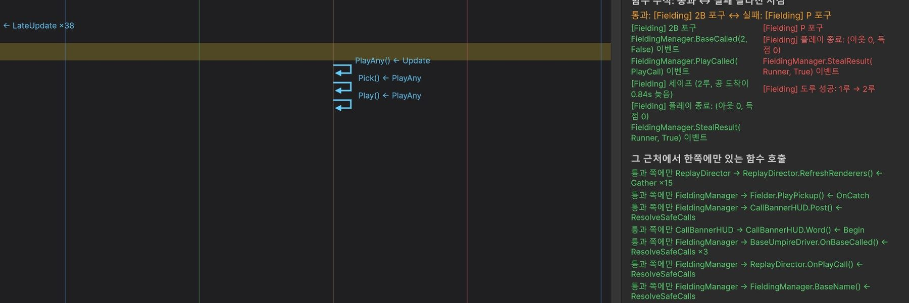
노란 띠 = 실패 쪽 "P 포구", 오른쪽 = 통과 "2B 포구"와 비교 · 통과 쪽에만 있는 판정 호출(ResolveSafeCalls → CallBannerHUD.Post 등)
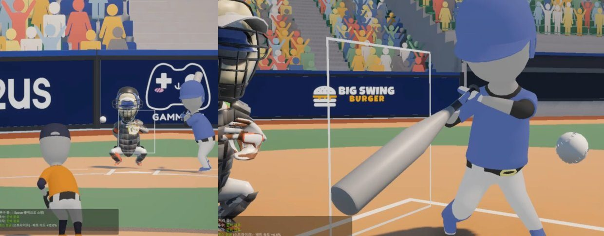
배트–공 충돌 순간
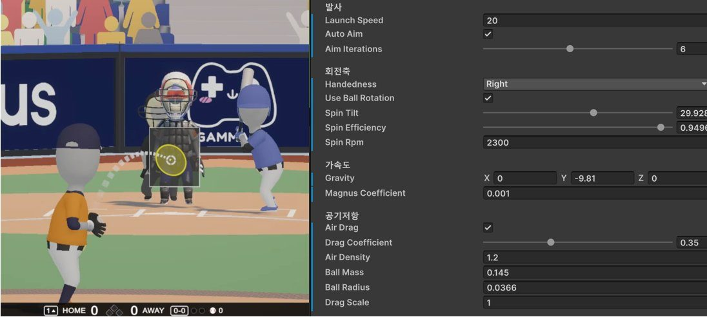
투구 물리 설정 (회전·마그누스·공기저항)
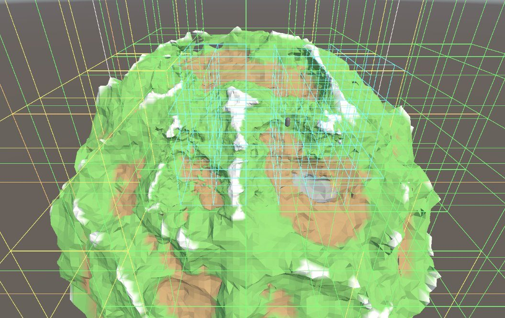
Octree 기반 생성 시 프레임 드랍이 심해 프로파일링조차 어려운 상태에서 DOTS용 OctreeNode와 노드 풀을 맡았습니다.
결과 프로파일러 기준 60fps 확보
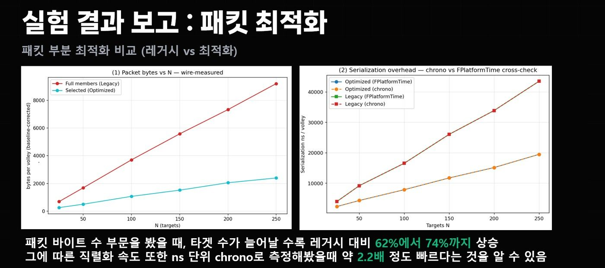
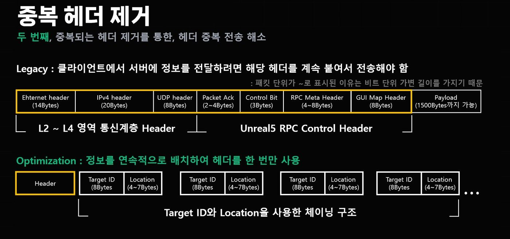
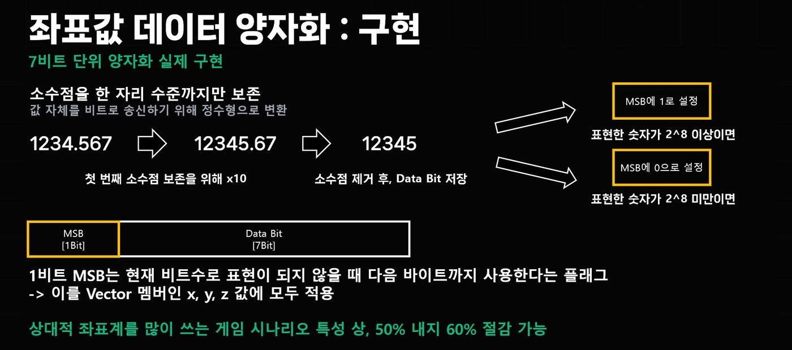
| 개선 | 문제 → 해결 |
|---|---|
| 불필요한 멤버 제거 | 피격 판정에 쓰지 않는 FHitResult 멤버까지 직렬화 → TargetActor·Location만 전송 |
| 중복 헤더 제거 | 송신마다 헤더 약 65B 누적 → 대상 수 헤더 하나 뒤에 대상 정보를 이어 붙여 한 번에 송신 |
| 좌표 양자화 | FVector 96비트 → FVector_NetQuantize10 + NetSerialize로 가변 비트 패킹 |
| 포인터 스왑 | Spec 대입 시 TArray·TMap 깊은 복사 → 포인터 스왑으로 약 350B 복사·힙 재할당 절감 |
AI 활용 회고 — AI에게 코드 베이스 분석을 맡기자 구버전 기준으로 상위 버전에 이미 있는 기능을 해결책으로 제시했습니다. "엔진 자료형 크기에 비해 실제 쓰는 비트가 적다"는 가설을 직접 다시 세워 전략을 짜고, AI는 코드 수정과 검증에만 사용했습니다. 패킷 크기 레거시 대비 62~74% 절감, 직렬화 약 2.2배 빠름.
GetQueuedCompletionStatus 기반 완료 처리 스레드, WSAOVERLAPPED를 상속한 IocpEvent + Session으로 송수신 후처리. 네트워크 스레드 풀과 게임 루프 분리, 부하 테스트용 StressBot
AI가 생성한 코드가 lock 안에서 큐를 순회해 지연이 큼 → 포인터 교환으로 변경. 측정 간격은 MMORPG 트래픽 논문 근거 → 평균 lock 지연 144ms → 15ms
AI 생성 코드에서 직접 찾은 결함 — detach로 스레드 관리를 끊어 종료 시 작업이 끝나지 않음 → 실행 플래그 + nullptr 종료 패킷으로 정상 종료. Initialize·include 누락, 자료형 변경 후 관련 함수 미수정 등도 정리했습니다.
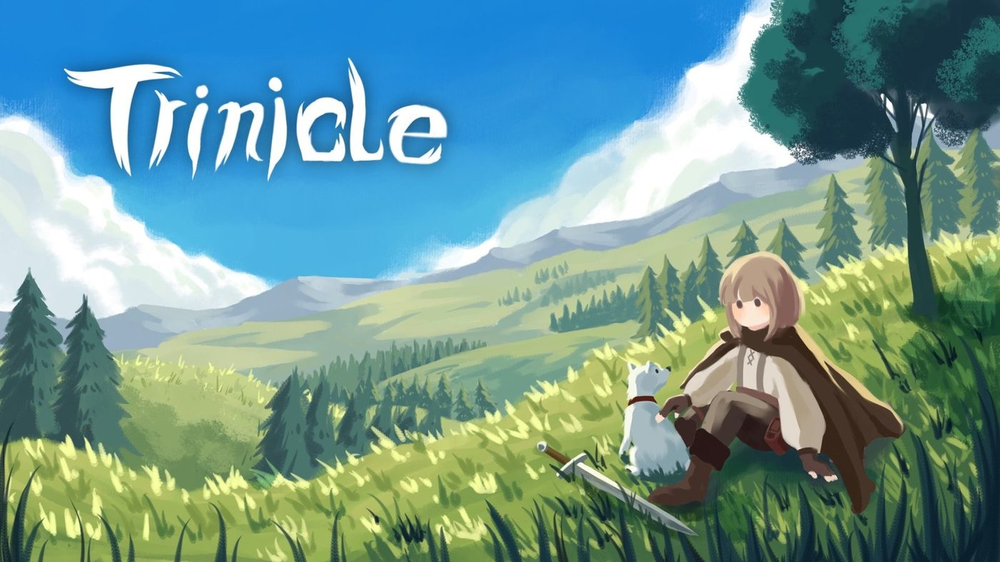
절차적 맵 생성·타일 배치, 로그라이크 던전 생성, 보스 Behavior Tree 설계를 맡았습니다.
| 프로젝트 | 기간 · 형태 | 내용 |
|---|---|---|
| DirectX 12 그래픽스 렌더링 | 2025.09~12 · 1인 | 명령 할당자·리스트·큐, 더블 버퍼 스왑체인, PSO·HLSL, Assimp FBX 로딩, 기즈모 |
| IntotheSeed (MSW) | 2026.07 · 팀 | 메이플스토리 해커톤에서 Claude MCP로 제작. 4인 매칭, 슬롯별 스킬·아티팩트 |
| 장갑형 VR 입력장치 | 2021.09~12 · 팀 | Unity 연동 VR 입력장치 — SSU 창의적 공학설계 전시회 최우수상 |
| 연도 | 내용 | 결과 |
|---|---|---|
| 2026 | 정보처리기사 | 취득 |
| 2026 | SSU 캡스톤 디자인 프로젝트 대회 (고급 캡스톤 디자인) | 장려상 |
| 2026 | SCON 알고리즘 대회 | 은상 |
| 2025 | 정보처리학회 ASK 2025 학부생 논문 부문 | 금상 |
| 2025 | 펄어비스 딩가딩 해커톤 파이널 | 게임 개발상 · 기획상 |
| 2025 | SCON 알고리즘 대회 | 동상 |
| 2021 | SSU 창의적 공학설계 전시회 | 최우수상 |
| 분류 | 기술 | 사용 경험 |
|---|---|---|
| Engine | Unity · Unreal 5 · DirectX 12 | Unity: 3D 야구 게임 1인 개발, DOTS·Burst 최적화, Editor 확장 툴 · Unreal 5: GAS 네트워크 최적화 · DX12: 렌더링 파이프라인 직접 구성 |
| Language | C# · C/C++ · JavaScript · Lua | C#: 게임 물리·애니메이션·에디터 툴 · C++: IOCP 서버, Unreal 엔진 코드 · Lua: 메이플스토리 월드 |
| AI | Claude · Unity MCP | MCP로 에디터를 직접 조작하는 개발 환경, 커스텀 MCP 도구로 QA 루프 자동화, AI 생성 코드 검증 체계 |
| CS | 자료구조·알고리즘 · 멀티스레딩 · 네트워크 | SCON 은상·동상 · Tarjan SCC·LCS·이분 탐색·BFS/DFS 실전 적용 · 정보처리기사 |
| Tools | Github · Perforce · Visual Studio · Blender · Aseprite | 4~6인 팀 협업, Unity Profiler·Deep Profiler로 GC·프레임 분석 |